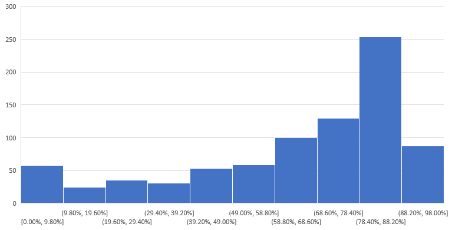

Thermo Trains
Detektion von Isolationsproblemen an fahrenden Zügen
Sebastian Häni, Raphael Laubscher
Vision
- Automatische Erkennung von Isolationsdefekten
-
- → Energie sparen
- → Instandhaltungskosten senken
Quelle: Urs Gehrig, SBB, Competence-Center Predictive Maintenance
Predictive Maintenance System
- Daten-Akquise
- Daten-Verarbeitung
- Daten-Analyse
Daten-Akquise:
Thermo-Scanner
Specs
| Farbkamera |
76° HFOV & 58° VFOV |
738 CHF |
| IR-Kamera |
45° HFOV & 37° VFOV |
8'360 CHF |
| Industrie-PC |
Quadcore i7 |
2'765 CHF |
| Verbindung |
LTE Modul, Antenne |
|
| Temperatursensor |
für Aussentemperatur |
12 CHF |
| Klimaregelung |
Heizlüfter/Thermostat |
|
| Doppelwandgehäuse |
IP55 zertifiziert |
3'286 CHF |
Bolometer- vs. Photonen-Detektor
Waschstrasse
- Reinigung alle 2 Wochen
- Schritttempo
- Stromanschluss
Aufnahmesteuerung autonom
Triggering
double imageMean = calcMean(images)
if (backgroundMean - imageMean > backgroundMean * threshold) {
changeState(ENTRY)
}
Constraints
| Konstante |
Wert |
| MinTimeAfterExit |
60 Sekunden |
| MinTimeAfterEntry |
60 Sekunden |
| MaxRecordingDuration |
45 Minuten |
| ExitThreshold |
8 |
| ExitScheduleTime |
20 Sekunden |
Software Komponenten
- Visible Light Reader
- IR Reader
- IR Compressor
- Temperature Reader
- Weather Reader
- Uploader
Kompression von Infrarotdaten
- FLIR ATLAS SDK erzeugt SEQ Dateien
- SEQ = FLIR FFF Dateien hintereinander gereiht
- FFF = TIFF angereichert mit
- proprietären EXIF Headern
- gefüllt mit rohen A/D Counts
SEQ Dateigrösse
20 Minuten
* 60 Sekunden
* 30 Frames
* 16 Bit
* 640 Pixel
* 512 Pixel
= 189 GiB
SEQ Dateigrösse
20 Minuten
* 60 Sekunden
* 1 Frame
* 16 Bit
* 640 Pixel
* 512 Pixel
= 6.3 GiB
Frames in Video komprimieren
Es gibt keinen 16 Bit Codec!
- Kleinster und grösster Wert bestimmen
- Jedem Pixel den kleinsten Wert abziehen
- Die Auflösung auf 8 Bit reduzieren
- Encodieren
Verlust berechnen
Präzisionsverlust = Max(0, (1 - (256f / (max - min))) * 100)

Verlust berechnen
| Verlust |
Genauigkeit |
| 0% |
0.01°C |
| 100% |
0.625°C |
| 80% |
0.125°C |
Weitere Tools ...
- Sentry Error Tracking
- Teamviewer Remote
- Logs
Aufnahmephasen
| Phase Nr. |
Zeitraum |
Aufnahmen |
| 1 |
20.11.2017 - 29.11.2017 |
273 |
| 2 |
19.12.2017 - 07.01.2018 |
306 |
|
579
|
Daten-Verarbeitung:
Post Processing
Daten-Analyse:
Thermoboard
Fazit
- interdisziplinäres Projekt
- einsatzbereite Lösung
- grosses Potential
Wie weiter
- 26.01. Auswertung mit Chef Technik Phase 2
- 13.02. Projektvorstellung in der SBB
- 13.02. Anschliessend Meeting Weiterführung
- Proof of Detection mit DPZ Wagon
Nächste Schritte
- Integration RFID Reader
- Integration SBB Fahrplansystem
- Skalierende Serverinfrastruktur aufbauen
- Mehrere Thermo-Scanner bauen